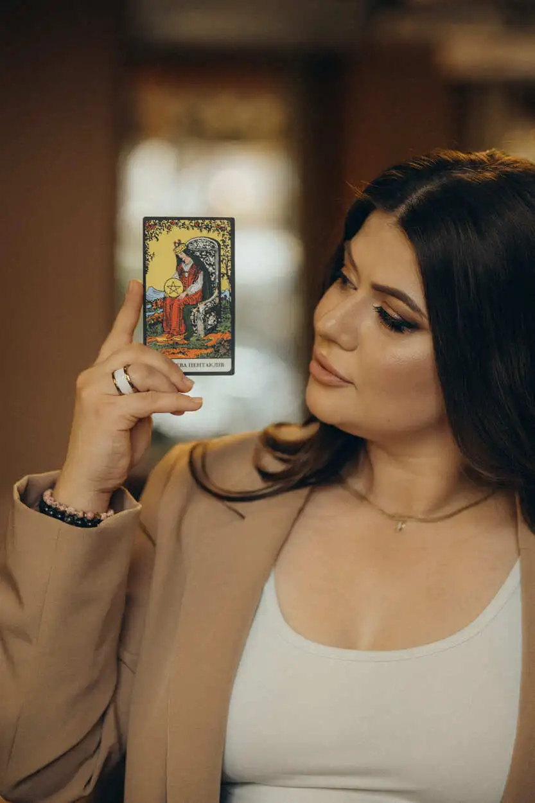

Вітаю! Я практикуючий езотерик, таролог і нумеролог. Мене іноді називають відьмою - і я не відхрещуюся від цього.
Адже відьма — це «відаюча жінка», та, що знає глибше й бачить далі, ніж інші.
З 2022 року я допомагати людям знаходити відповіді, відкривати власні ресурси, зцілювати душу від негативу та вибудовувати гармонійне життя.
Моє покликання
Моє призначення - допомагати вам знаходити гармонію, долати сумніви, відчувати впевненість у собі та отримувати бажане.
Я не програмую майбутнє, бо воно багатоваріантне. Але я можу показати дороги, підсвітити правильний вибір і допомогти притягнути бажані події.
Кожна консультація - це конфіденційний простір, де ви можете бути відвертими й чесними з собою.
Мої енергетичні інструменти
Я працюю з різними сакральними системами, обираючи індивідуально для кожного запиту:
• Таро - для діагностики, прогнозу, пошуку відповідей на турбуючі питання й прийняття рішень.
• Нумерологія - для розкриття сторін особистості, пошуку крашої сфери для реалізації, гармонії у стосунках, опрацювання карми та кращого призначення душі.
• Програмні свічки — для очищення, захисту, наповнення та реалізації бажань.
• Руни — у вигляді ставів, в’язей, амулетів і ворожіння. Вони дають підказки, додають сили й захисту.
Кожен інструмент я підбираю індивідуально, залежно від вашого запиту.
❌ Не роблю привороти, кладники, підклади, переклади, мороки, опої та окорми, відвороти, порчі. Чорною магією не займаюсь, шкоду іншим не роблю. Мій шлях - світла енергетика, що підсилює й захищає, очищає, а не руйнує.
Метод "Матриця долі" та числа
Я глибоко працюю з нумерологією: класичною, ведичною та методом «Матриця долі».
Числа - це код, у якому закладені наші сильні й слабкі сторони, карма, таланти, фінансові можливості та навіть доленосні дати.
Використовуючи цей метод, я допомагаю людям зрозуміти свої задачі, призначення й знайти найкращий шлях для руху та розвитку.
Мій шлях у світ Таро
Все почалося ще в дитинстві, коли я відчувала особливий зв’язок із символами й енергіями.
Згодом це переросло у професійну практику: карти стали моїм інструментом, що відображає внутрішні процеси й допомагає побачити приховане.
Таро для мене - це не просто «ворожіння», а мова душі, яка дає відповіді й підказки для рішень у будь-якій сфері життя.

Місце, де ви знайдете відповіді
Робота зі мною - конфіденційний простір, де ви можете розкласти все «по поличках», побачити глибинні причини й знайти свій шлях.
Мої консультації - це не просто відповіді на турбуючі питання, це підтримка й новий погляд на ситуацію.
Ви можете звернутися до мене з будь-якими питаннями: стосунки, фінанси, робота, самореалізація, духовний розвиток, діагностика негативу чи пошук власного шляху.
Я допоможу вам зрозуміти себе, свої рішення й наслідки, відкрити внутрішні ресурси й побачити наступний крок.
Разом ми нагадаємо вашій душі, що вона сильніша, ніж будь-які випробування.
Я використовую глибокі знання езотерики, нумерології, Таро та
програмних свічок, щоб допомогти вам порадою, захистом, обрядами й
іншими ефективними інструментами для покращення вашого життя.
Як проходить консультація і що потрібно від мене як клієнта?
Для розкладу на картах Таро або Рунах необхідно - ім’я, вік та фото всіх учасників розкладу, варто вказати ролі учасників розкладу(хто є хто), а також вагомі, на вашу думку деталі. Консультація проходить офлайн - у текстовому форматі + фото карт(рун).
Підбір формули Рун - важливим є ваш намір, що ви саме хочете отримати, та кінцева ціль, тобто до чого вас рунічна формула приведе. Консультація у форматі діалогу. Додатково ви можете замовити гравіювання рунічної формули на браслеті.
Матриця долі - обрати варіант розрахунку (матриця долі, дитяча матриця, матриця сумісності з партнером, матриця особистого бренду або прогнозування року). Ви отримаєте текстовий файл та додаткові файли, що полегшують опрацювання + моя підтримка
Програмні свічки - обираємо колір та намір, створюю під вас і відправляю. Ви при пропалюванні свічки, надсилаєте мені фото/відео - я розповідаю, що я бачу. ❗️Всі консультації проходять по 100% оплаті послуги.
Як зрозуміти, яка послуга потрібна саме мені: Таро, Матриця долі, руни чи програмна свічка?
Кожен інструмент вирішує різні задачі:
Розклад на картах Таро - коли потрібна конкретна відповідь тут і зараз, розібратись в ситуації, підтвердити або спростувати ваші здогадки,
Матриця долі - якщо хочете зрозуміти себе, свої сильні та слабкі сторони, де ваші гроші, як побудувати гармонійні стосунки, які у вас задачі та таланти, як вам проявляти себе, як будувати особистий бренд, розуміти свою дитину та свого парнера.
Руни - для глибоких змін, притягнення бажаного, досягнення цілі, очищення та енергетичного впливу.
Програмні свічки - коли ви готові працювати з наміром і отримати матеріальний результат.
Я допоможу підібрати найефективніший варіант під ваш запит - від аналізу до енергопідтримки.
Чи працюєте з ритуалами, приворотами, порчами?
Я не виконую темних ритуалів, приворотів і маніпулятивних практик. Працюю лише у світлому напрямку - очищення, захист, відновлення енергії та гармонізація стосунків. Але, я можу провести діагностику на наявність негативних програм та впливів і домогти їх очистити, прибрати та поставити захист.
Моя мета - допомогти вам через усвідомлення, а не нав’язування чужої волі. Результат завжди безпечний, етичний і підсилює вашу власну енергію, а не забирає її.
Скільки часу працює результат (розклад, свічка, рунічна формула) і чи потрібно повторювати ритуали?
Тривалість дії залежить від вашого запиту та готовності діяти після консультації.
Розклад на картах Таро показує проміжок 1-3 місяці(або обраний вами період).
Свічки та руни починають працювати відразу після активації(рунічної формули або браслету). Свічка - в процессі пропалювання починає свою роботу.
Головне - не чекати дива, а рухатися у співпраці з Всесвітом. Я завжди підкажу, коли варто підсилити результат.
Чи можу я записатися на розбір або замовити свічку для конкретної ситуації (гроші, стосунки, захист)?
Так, усі розбори, ритуали й свічки створюються під ваш особистий запит.
Я працюю з фінансами, стосунками, здоров’ям, самореалізацією, захистом і очищенням. Перед замовленням я проводжу з вами консультацію, на якій зчитую енергію ситуації, підбираю формулу, колір і наповнення свічки або рунічної роботи. Ви отримуєте не шаблон, а індивідуальну енергетичну програму, яка працює саме з вашою енергією та цілями.
Чи можу я отримати консультацію, якщо живу в іншій країні?
Так, я працюю з клієнтами з усього світу 🌍
Консультації проходять онлайн - у Zoom, Telegram або WhatsApp. Оплата доступна у будь-якій валюті. Енергетика не має меж - розклад або свічка працюють незалежно від відстані. Ви отримаєте детальний розбір, рекомендації та підтримку так, ніби ми поруч.
Якщо ви не знайшли відповідь на своє запитання — просто напишіть мені, і я з радістю допоможу.
Звертайтеся у будь-який зручний для вас час. Проводжу особисті та
онлайн-консультації, доступні для клієнтів з усього світу.
мої досягнення
Я постійно вдосконалюю свої знання та навички, щоб кожна консультація була ще глибшою, точнішою й кориснішою для вас.
Дякую Анастасії за консультацію. Звернувся з питанням про стосунки - не знав, як діяти далі.
Вона розклала карти і показала ситуацію з боку, який я не бачив. Дала конкретні поради, що робити.
Після розмови з'явилась ясність і розуміння, куди рухатись. Рекомендую, якщо потрібна допомога у складних ситуаціях.
Марія
Буча
Звернулася до Анастасії з питанням кар'єри.
Перебувала на роздоріжжі - залишатися на поточній посаді чи шукати нові можливості.
Розклад допоміг побачити реальну картину та зрозуміти перспективи кожного варіанту.
Отримала чіткі рекомендації, які виявилися дуже практичними. Вдячна за професійний підхід.
Жанна
Львів
Проходила через непростий період і потребувала підтримки.
Консультація з Анастасією допомогла структурувати думки та знайти внутрішній спокій.
Поради виявилися корисними для прийняття важливих життєвих рішень.
Рекомендую тим, хто шукає розуміння складних ситуацій.
Контакти
Напишіть мені зручним для вас способом, і я обов'язково з вами зв'яжуся.
Проводжу консультації онлайн для клієнтів по всьому світу.
Детально розберу вашу ситуацію і підкажу, які кроки варто зробити.Пишіть!